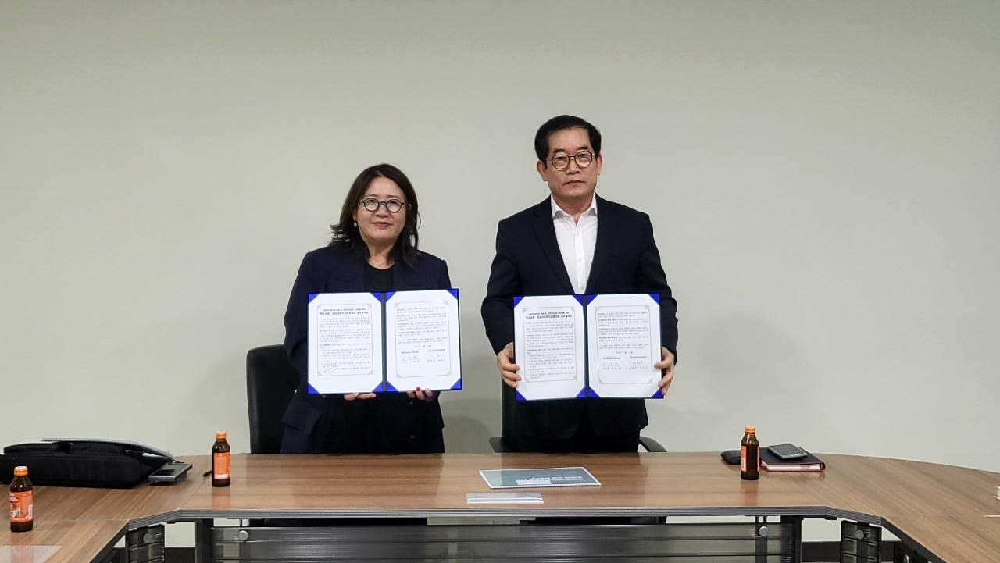

전국 첫 부산 서민금융복합지원센터 개소
금융·복지·고용 상담을 한 곳에서. 지역 밀착형 지원이 부산 중구에서 시작됩니다.
내용 보기
부산형 포용·상생금융 생태계 구축 업무협약
지역 사회연대경제조직을 발굴하고, 금융상담부터 성장까지 함께 연결합니다.
내용 보기미소금융 안내
2026년 사회적경제기업 성장지원사업 모집공고접수 종료
부산·울산·경남 사회적경제기업 성장지원사업. 해당 공고의 접수기간은 종료되었습니다.
내용 보기
2026 상반기 미소금융 워크숍, 우수기관 포상
지역의 자립을 위해 함께 걸어온 노력. 사업수행기관 워크숍에 참가했습니다.
내용 보기
경남사회적기업협의회 금융지원 활성화 업무협약
기업 발굴부터 상담, 성장 지원까지. 사회적경제기업의 금융 접근성을 넓힙니다.
내용 보기미소금융 안내
사회적경제기업을 위한 사회연대금융 안내
사회적기업·예비사회적기업·사회적협동조합의 내일을 위한 금융지원입니다.
내용 보기미소금융 안내
2026년 정기총회 및 이사회 개최
정기총회와 이사회를 개최하고 법인의 서민금융 지원 활동을 이어갔습니다.
내용 보기미소금융 안내
부산광역시·부산신용보증재단 업무협약 안내
지역 소상공인을 위한 정책금융 정보 제공과 상담 연계, 금융지원 협력에 관한 당시 소식입니다.
내용 보기LET’S TALK
혼자 고민하지 마세요.
가까이에서 듣겠습니다.
나에게 맞는 지원이 있는지,
전화 한 통으로 먼저 이야기 나눠보세요.
미소금융 부산중구법인
부산 중구에서
만나 뵙겠습니다.
부산광역시 중구 중앙대로 21서민금융통합지원센터 (우) 48955
- 상담시간
- 평일 09:00–18:00
- 점심시간
- 12:00–13:00
- 팩스
- 051-255-0076
주말·공휴일 휴무 · 방문 전 전화 문의 권장
네이버 지도로 길찾기